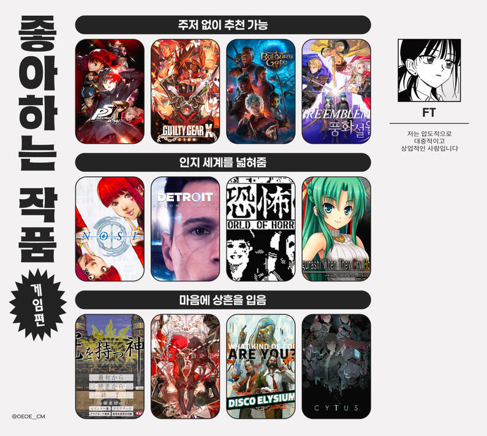
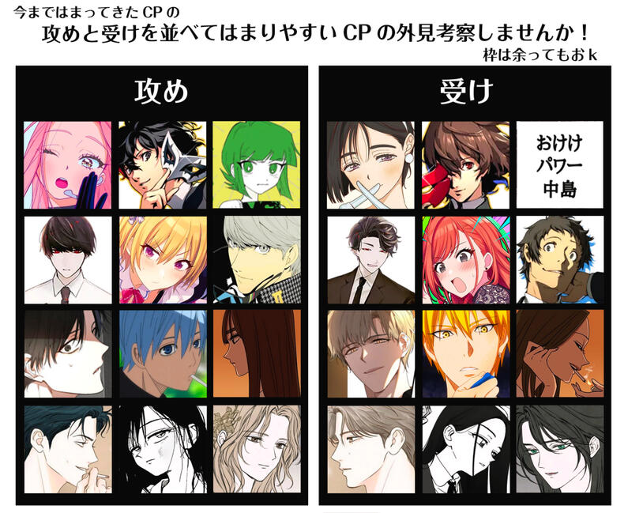

FASHION IS
FUNCTION
FT 성인 엪티 엪냥이
❶ ABOUT

- 오픈 다장르 드림충 사담계
- 일상, 셀털 거의 안 하지만 딱히 장르를 열심히 파지도 않습니다 전 그때 그때 하고 싶은 얘기만 합니다⋯
- MM MF FM FF 전부 빨음
- 호불호 관련 이야기 잦음
- 게임 애니 연뮤 드라마 소설 만화 드씨 매체 안 가림
- 교류 적은 사람 수시로 정리합니다 사감 없음 다시 걸으셔도 됨
- 드림 배려 필요 없습니다 필요하시면 해 드립니다
- R18 G18 RG18 자유롭게 이야기하되 구체적인 이야기는 필터링합니다
- 보통 트윗 삭제 십 분 이내로 함 필요하신 내용은 미리 말씀하세요
❷ LIKES

- 퍼그 (캐릭터가 아니고 코 잘 골고 주름 많고 개못생긴 개요)
- 빛과 밤의 사랑(中國, 韓國)
- 중국 배우 宋威龙
- 버닝 아니나 좋아함: 유메쿠로 무기미도 도키걸즈
- PERSONA CoE BACCANO UN-GO MONOGATARI
- 풍화설월 듀라라라 아카기 도박마 카케구루이 죠죠 중국 네 글자 겜
- 주인공왼 개팔자왼 예민왼 능청른 또라이른 외계인른 별창른
❸ DISLIKES
- 조슈바네 단크라 이르키르 카인오웬 이반틸 오오시죠
- 이반틸 이르키르 제외 리버스 포함
- 불호에 관한 이야기 자체를 꺼리시는 분
- 이슈에 관심 많으신 분 (한두 번 보는 것도 싫어해요) 이슈란 대개 이런 것을 의미합니다: TPRG 논쟁, 개인간의 공론화, 현재 화두가 되는 주제이나 큰 범위에서 서브컬쳐에 한정된 내용 등. 이야기의 논제보단 확산 노이즈의 여부와 타이밍 정도를 더 중요하게 보고, (주로 사회적) 담론은 이 항목에 해당하는 문제가 아닙니다.
- 탈덕, 그에 준하는 장르를 추팔식으로 계속 언급하는 것
- 흔적 및 @ 없는 트훔
- 이외 유동적으로 스루 전부 직멘만 X
위의 것들은 제가 하는 것도 싫어하니, 만약 제가 한다면 꼭 지적해 주세요.